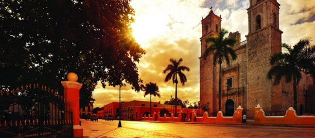
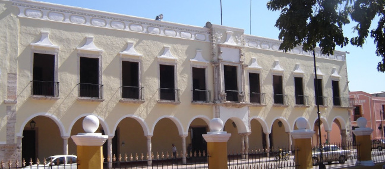

Discover the magic that surrounds our historic hacienda.
Main Square or Historic Center
The city of Valladolid was founded in 1543 and was originally located in the Mayan town of Chauac-Há, but on March 24, 1545, the town was moved to Zací, the capital of the Mayan chiefdom of the Cupules. Valladolid is the second most important city in Yucatán and the oldest in the state. In 2012, the city was incorporated into the list of Magical Towns of Mexico, being the second to receive that designation in the state of Yucatán. In the Historic Center, especially on weekends, you will find a great variety of snacks, sweets, esquites, marquesitas, corn ice cream, among other flavors, a very colorful place to spend the afternoon, also on Sundays there is a danzón dance, whether you just want to enjoy the show or encourage yourself to dance; You can also buy handicrafts in some of the shops around. Valladolid is a city that still retains its colonial style, but without a doubt, it also offers a wide variety for all tastes and needs. Place principale ou centre historique.

Church of Saint Servatius
Witness of important events of the caste war, its tower served to hold cannons that in the hands of the rebel Indians started the caste war, also known for bloody events that occurred inside, known as "the crime of the mayors"; In its upper part there is a clock that, thanks to the care of a family of local watchmakers, has been maintained over the years; its two towers with bell towers are finished off with a cross carved in stone, each one. A church that undoubtedly bears witness to the glorious past that keeps the history of Yucatan.
Ex-Telar La Aurora (Library)
Pedro Sainz de Baranda established in 1824 La Aurora de la Industria Yucateca, a spinning and weaving factory. The company was destroyed by fire during an attack by Mayan rebels in 1845 and remained abandoned for several years. Later it functioned as a military barracks, federal secondary school, public jail and headquarters of the Third District Court. It currently houses a theater and the Pedro Sainz de Baranda public library. The property was adapted and currently retains the style in which it was built. The former loom occupies a building made of masonry with vaulted ceilings supported by buttresses. Its dimensions are 45 by 75 feet, occupying a total extension of about 150 by 200 feet. The construction is surrounded by a fence of more than three meters high.

House of Culture
It is a porticoed building based on semicircular arches that rest on cylindrical stone columns, both on the ground floor and on the upper floor. The spaces on the lower level are framed with stone and a lintel in a mixtilinear fashion. The access of the carriages is a vain of greater proportion. On the upper level, the spaces are not framed, while the corridor is delimited by a wrought iron railing with wooden handrails. Inside there are some parts framed with stone and wooden gates. It has mosaic, stone and wooden floors. And in its patio there is an archway with the same architectural characteristics that the façade exhibits. It is located in the same building as the Municipal Palace, in the Historic Center. Now they are offices of the Directorate of Municipal Culture and their visiting hours are from Monday to Friday from 9:00 a.m. to 2:00 p.m. and from 3:00 p.m. to 9:00 p.m. and on Saturdays from 9:00 a.m. to 12:00 p.m.
Causeway of the Friars
It is a traditional colonial street fully recovered and restored, bordered by colonial-style houses, with paving stones, landscaping, lanterns, restoration and integration of facades to offer a splendid and evocative tour. It is located near Calle 41-A, between 46 and 54 (for the 5 Calles) in the Sisal neighborhood.
Convent of San Bernardino de Siena
Considered an architectural treasure for its Franciscan style and its Baroque air, it is one of the buildings that are a vestige of the arrival of Spanish evangelization to the Mayans, it is one of the seven buildings founded by the Franciscans, the second largest after the one in Izamal. It is made up of a church, chapel, an ex-convent, atrium and even an orchard; Inside there is an altarpiece carved in wood, painted in gold, near the image of Santa Teresa and the Sorrowful Virgin.
San Roque Museum
It is a simple but interesting museum. It is located in a 16th century house that was originally built to be a hospital. Here some archaeological pieces, ancient crafts and some traditional Mayan medicine utensils are exhibited.
Zací Cenote
It is located a few blocks from the city center. It is a cenote that is accessed through a small tunnel with steps, it is 45 meters in diameter and 80 meters deep. It is not suitable for swimming, but some locals even dare to dive because they are more familiar with the cenote. The water is green due to the large amount of vegetation that surrounds it. On the roof of the cenote you can see some bird nests that come and go, creating a noisy but at the same time spectacular atmosphere.
Book Your Stay
You can book by calling directly or using one of the following booking engines.
WIFI zone: We have a Wi-Fi internet connection available throughout the Hotel. Free.
Free parking: Free private parking is available on site. It is not necessary to reserve, but spaces are subject to availability.
Pool: Our pool is available to all guests during opening hours. Please follow the posted rules for your safety. Children must be supervised by an adult at all times.
Transport: We can help arrange airport transportation for an additional fee. Please contact reception 24 hours in advance to schedule.
Reception services: Our reception is available from 7:00 AM to 11:00 PM to assist you with check-in, check-out, and any inquiries.
Bike rental: Discover the city at your own pace. We offer bicycle rental services for a small daily fee, subject to availability.
Housekeeping: Daily housekeeping service is included in your stay to ensure your room is always clean and comfortable.
No pets: To ensure the comfort and safety of all our guests, pets are not allowed on the property, with the exception of certified service animals.
Private bathroom: All our rooms are equipped with a private bathroom with a shower, fresh towels, and complimentary toiletries.
Smoking is not allowed: For the health and comfort of our guests, smoking is strictly prohibited in all rooms and indoor areas of the hotel. A cleaning fee will be charged for violations.
Spanish - English: Our staff is bilingual and happy to assist you in both Spanish and English to make your stay more comfortable.
Accessibility: We have facilities and ground-floor rooms adapted for guests with reduced mobility. Please contact us in advance if you have specific needs.
Hotel Policies
Reservation: All reservations must be guaranteed with a valid credit card. You can book directly with us or through our trusted partners.
Cancellations: Cancellations made up to 72 hours before the arrival date are free of charge. Cancellations made after this period, or in case of a no-show, will incur a charge for the first night.
Check-in/out: Check-in is from 3:00 PM. Check-out is until 12:00 PM. Late check-out may be available for an additional fee, subject to availability.
Payment and payment methods: We accept cash, Visa, MasterCard, and American Express. The total amount of the stay must be paid upon arrival at check-in.
Privacy: We are committed to protecting your personal data. Your information will be used solely for reservation purposes and will not be shared with third parties, in accordance with applicable laws.
Guest and extra person policies: Room rates are based on double occupancy (2 guests). An additional charge will apply for a third person in rooms where it is permitted. Please consult rates and availability.
Conditions about children: Children of all ages are welcome. Children under 5 years old stay for free using existing bedding. Cribs are available upon request at no extra cost, subject to availability.
Pet Policies: As a general rule, pets are not allowed. Only certified service animals are permitted with prior notification to the hotel.
Parking: The hotel offers free private parking for guests. Spaces are limited and subject to availability. The hotel is not responsible for any damage or theft to vehicles.
Arrival: Upon arrival, guests must present a valid official identification and the credit card used for the reservation.
Silent policy: For the comfort of all our guests, we kindly request that you keep noise to a minimum between 10:00 PM and 8:00 AM. Parties or gatherings are not allowed in the rooms.